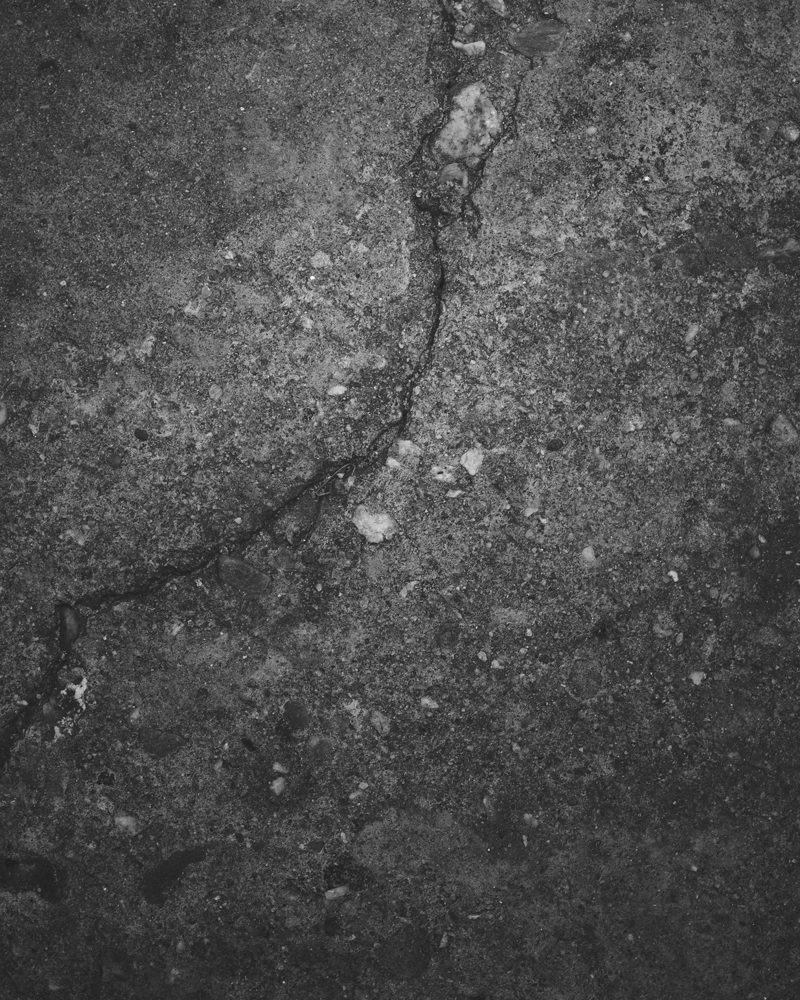
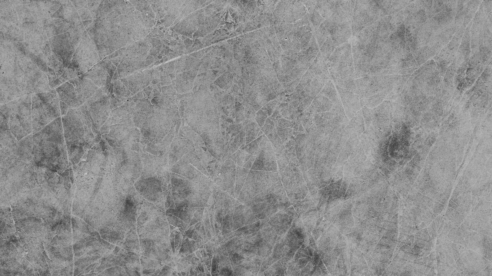
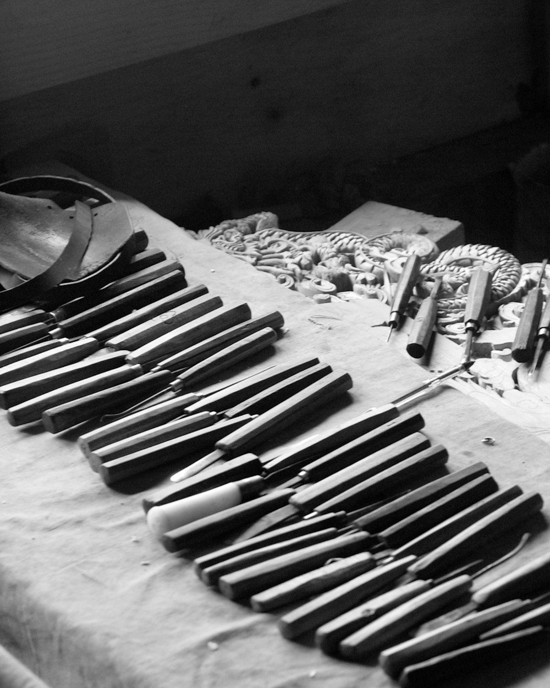
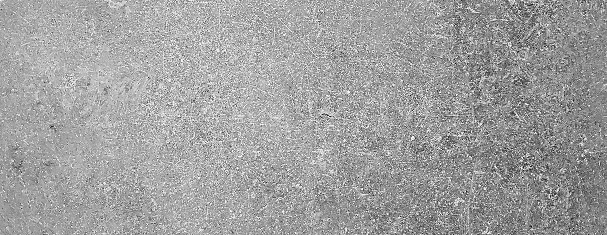

A working yard, not a merchant. We quarry it, saw it, work it by hand where the drawing asks, and fix it ourselves.

Fig. 01 — Guiting bed, freshly splitFour generations, one site, nothing factored out to a third party.
Stone is not a material you pick off a chart. Each bed cuts differently, weathers differently and takes a different arris. We will tell you when the one you have specified is wrong for the elevation it is going on.
| Bed | Character | Density |
|---|---|---|
| Guiting | Warm, shelly, takes a fine tooled finish | 2 180 |
| Farmington | Close-grained, holds a crisp arris | 2 340 |
| Temple Guiting | Pale and even, for long ashlar runs | 2 210 |
| Cotswold Hill | Hard, weathers slowly, exposed work | 2 400 |
| Bath Ground | Soft to carve, interior mouldings | 2 060 |
| Clipsham | Reliable, for conservation matching | 2 290 |
| Ancaster | Banded, for pieces meant to be read | 2 270 |

Coursed or random, sawn six sides or split face. Set out from your elevations, not from a pallet.
9–14 wkRun to a profile drawing or taken off an existing section on site. Templates cut in zinc and kept on file.
12–20 wkTwo banker masons. Label stops, capitals, lettering, replacement heads for conservation work.
By drawingRiven or sawn, calibrated, with the nosings detailed properly rather than glued on afterwards.
6–10 wkOur own gangs and our own scaffold sequence. We would rather fix it than watch it fixed badly.
Programmed
A mason who has not seen the building has not been given enough information.
Everyone here has been on site. Before a drawing is cut we go and stand in front of the thing — the wall it joins, the light it takes, the joint the last mason left. That visit is not a courtesy; it is where the setting-out actually happens.
Two banker masons, a sawyer, a fixing gang of three, a setter-out, an apprentice in her second year, and a yard manager who has been here since he was sixteen.
Arrange a yard visit →
Send a section, an elevation and a date.
You get back a cut list, a bed recommendation with the reasoning written down, a sample box of three finishes, and a programme that says what we can actually hold to rather than what wins the job.
We take on work we can hold the programme for.
If we are wrong for your project we will say so on the first call and point you at someone who isn't.
Grange & Son